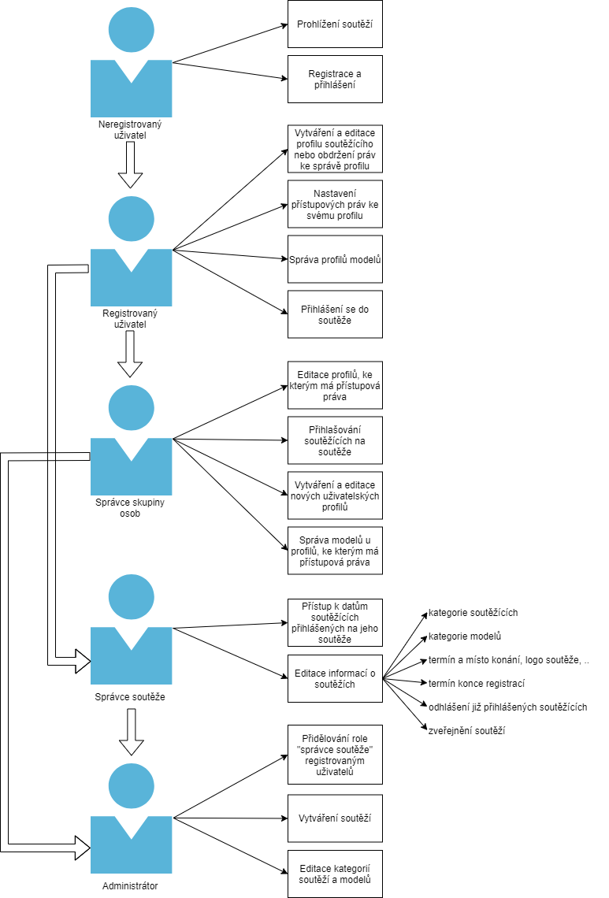
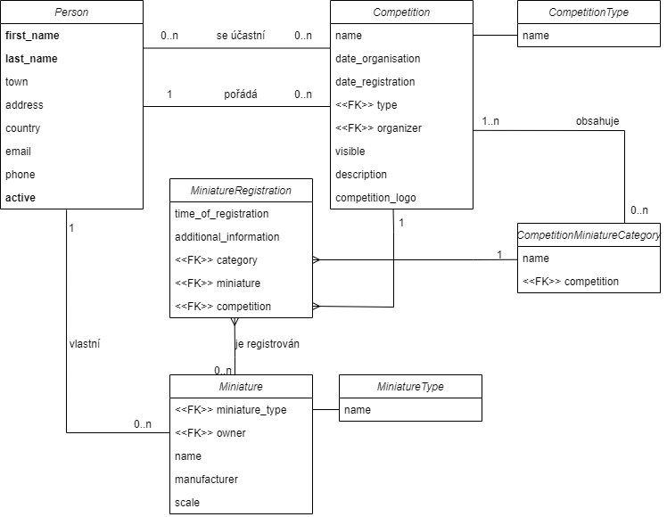

6. Vlastní zadání - Registrační systém pro modelářské soutěže
- Autoři
- Dalibor Beneš
xbenes56@stud.fit.vutbr.cz -
Návrh zadání, návrh schématu databáze, implementace základu uživatelského rozhraní,
implementace funkcionality ohledně uživatelů (přihlašování, registrace, odhlašování, změny),
implementace funkcionality ohledně tvorby a správy uživatelů a jejich
modelů, implementace přehledu soutěží a detailního pohledu na ně, zajištění cloud hostingu.
- Tadeáš Kot
xkotta00@stud.fit.vutbr.cz -
Výběr použitých technologií, implementace vytváření a upravování soutěží, implementace
správy soutěžních kategorií.
- Otakar Sedlák
xsedla1r@stud.fit.vutbr.cz -
Dokumentace, testování uživatelského rozhraní.
- URL aplikace
- modelari.modelarskesouteze.com
Uživatelé systému pro testování
UŽIVATELÉ MUSÍ BÝT PODLE TÉTO TABULKY
| Login | Heslo | Role |
|---|
| admin | admin | Administrátor |
| uzivatel1 | heslo111 | Správce soutěží |
| uzivatel2 | heslo222 | Správce osob |
| registrovany1 | heslo111 | Registrovaný uživatel |
| - | - | Neregistrovaný uživatel |

Implementace
Stručná dokumentace k implementaci, která popisuje, které části projektu (např. PHP skripty) implementují jednotlivé případy použití.
Vybraný framwork Django je postaven okolo návrhového vzoru MTV, tedy Model, Template, View, který je zhruba analogický k MVC.
Model v obou vzorech zaujímá stejnou funkci, View v MTV obstarává business logiku, Template se stará o prezentační logiku.
Controller z MVC přesně neodpovídá View, protože funkcionalita Controlleru je z velké části integrována již v samotném frameworku.
Framework Django zahrnuje i ORM, takže v celém projektu není ani jeden případ přímé manipulace s SQL dotazy.
ORM modely jsou vytvořené přesně podle předlohy v ER diagramu níže, nacházejí se v souboru modelari/models.py.
Jednotlivé View třídy představující View část návrhového vzoru jsou namapovány na svoje URL adresy, viz soubor modelari/urls.py
View třídy ve spolupráci s Template HTML soubory zaštitují veškerou business a prezentační logiku, takže jsou z hlediska
popisu implementace případů použití nejzajímavější. Všechny View třídy se nachází v souboru modelari/views.py. View třídy
zpracovávají HTTP požadavky a vykreslují zpět Template soubory, přesměrovávají uživatele na jinou stránku, nebo v případě
asynchronního dotazu (AJAX) vrací JSON objekty. Template soubory se využívají k vytváření HTML stránek, jedná se o HTML
soubory s přidanou notací frameworku Django pro View, která umožňuje vkládat data podle kontextu vytvořeném v příslušné View třídě.
K vykreslování formulářů se využívají Form třídy, které jsou součástí frameworku Django a umožňují jednoduché vytváření, následné
ověřování správnosti vložených dat a případného výpisu konkrétních chybových hlášek, v opačném případě k okamžitému zápisu dat do příslušného ORM modelu.
Tyto formulářové třídy se nachází v souboru modelari/forms.py
Frontend sestává z HTML Template souborů, které jsou doplněny o několik jednoduchých skriptů v jazyce JavaScript, nejčastěji
za účelem provádění asynchronních AJAX dotazů tam, kde to je vhodné. HTML kód stránek je doplněn frameworkem Bootstrap, který
poskytuje CSS kaskádové styly. Uživatelské rozhraní je ukotveno na souboru templates/base.html, který obsahuje záhlaví (navigační menu)
a zápatí každé stránky a jehož vnitří obsah je vyplněn Template souborem dle daného View.
Popis View a Template souborů a případy použití jež obsluhují:
HomePageView třída a Template home_page.html:
Vytváří úvodní stránku, která obsahuje pouze odkazy na další části registračního systému. Dostupnost odkazů se mění
podle uživatelské role.
PersonsView a soubory v templates/persons/, které začínají slovem "person":
Vytváří přehled soutěžících, jež daný uživatel spravuje. V rámci přehledu lze vytvářet nové profily soutěžích
i upravovat již existující profily. Každý uživatel může spravovat neomezený počet soutěžích.
Každý soutěžící vlastní modely, jež se dají spravovat přes odkaz v kartě daného soutěžícího.
PersonMiniaturesView a soubory v templates/persons/, které začínají "miniature":
Obsluhuje přehled modelů daného soutěžího, kde je možné modely vytvářet i upravovat již existující.
CompetitionOverviewView a competitions/competitions_overview.html:
Obsluhuje základní přehled modelů, který se zobrazuje různě podle role uživatele,
administrátor má možnost vytvářet nové soutěže, což je obstraráno přesměrováním na stránku
obsluhovanou CompetitionCreateView.
CompetitionDetailView, CompetitionRegistrationView, CompetitionPersonListView a CompetitionMiniatureCategoryView,
s pomocí souborů z templates/competitions/ obsluhují detailní pohled na každou soutěž, správci či administrátorovi umožňují
editovat patametry soutěže, zobrazovat výpis registrací, spravovat soutěžní kategorie a všem registrovaným uživatelům
umožňují zaregistrovat na soutěž svoje soutěžící.
LoginPageView, LogouPageView, RegistrationPageView, AccountView a Template soubory v templates/accounts/:
Obsluhují stránky, které mají co dočinění s základní uživatelsky orientovanou funkcionalitou, jako je přihlašování,
odhlašování, registrace a přehled a možné změny účtu.
UsersView, CategoriesView a soubory v templates/admin/:
Obsluhují stránky přístupné pouze administrátorovi. UserView poskytuje přehled o aktivních a neaktivních uživatelích a
umožňuje upravovat jejich data. CategoriesView umožňuje administrátorovi zobrazovat, vytvářet a spravovat kategorie
soutěží a modelů.
Databáze

Instalace
Stručně popište:
-
Je potřeba mít nainstalován python verze 3.8 a vytvořenou prázdnou postgres databázi.
- Po stažení a rozbalení projektu je potřeba vytvořit vyrtuální prostředí s pythonem 3.8, spustit jej a nainstalovat potřebné knihovny:
mkdir venv
python3 -m venv ./
source venv/bin/activate
pip install -r requirements.txt
-
Nyní svoji prázdnou databázi nastavíte v itu_iis/setting.py úpravou proměnnou DATABASES podle následujícího vzoru:
DATABASES = {
'default': {
'ENGINE': 'django.db.backends.postgresql',
'USER': 'Jméno uživatele',
'PASSWORD': 'Heslo uživatele',
'NAME': 'Název databáze',
'HOST': 'Hostitel',
}
A spustíme inicializaci databáze:
./dataInit.sh
- Nyní můžeme spustit server:
python manage.py runserver
Známé problémy
Problémem obecně byl nedostatek času v týmu.
Nejsou známy žádné konkrétní problémy, kód ale neprošel
důkladnou revizí a je proto velice možné, že u některé stránky
není korektně omezen přístup, pokud je zobrazena přímo odkazem.
Dále je možné, že některé formuláře korektně nezobrazí chybné vstupy.
To se děje hlavně v případě formulárů s textovým vstupem, takže by zpravidla
chybný vstup ani neměl nastat.
Známým problémem je nekonzistentní použití asynchronních AJAX dotazů,
to ovšem nemá na funkcionalitu projektu žádný vliv.